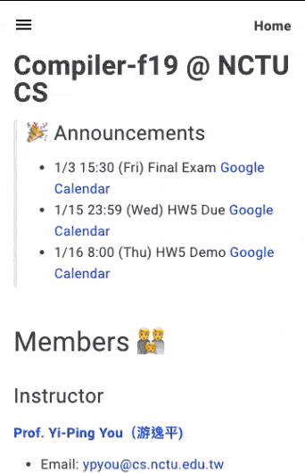
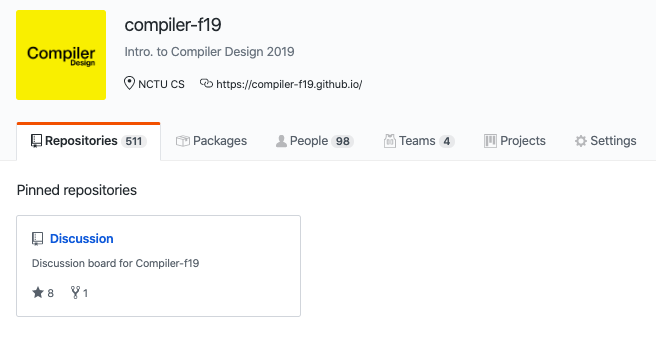
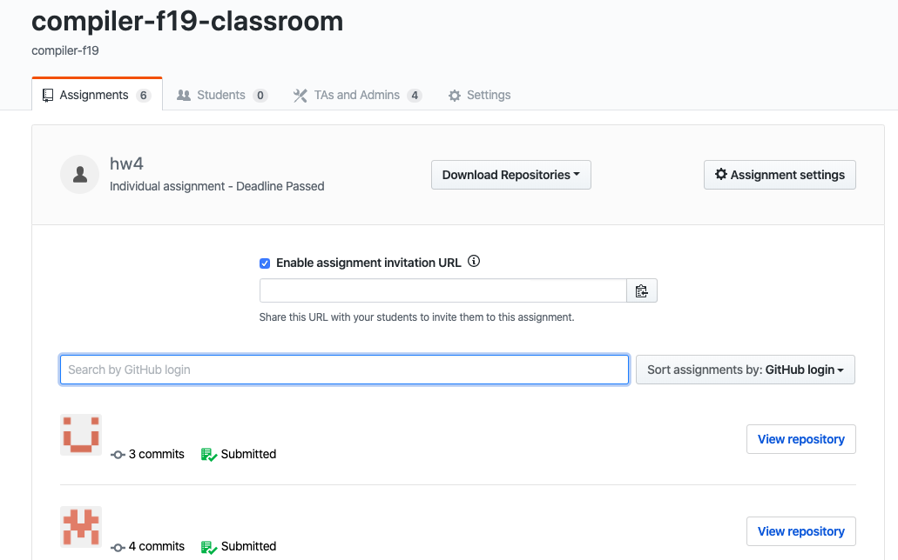
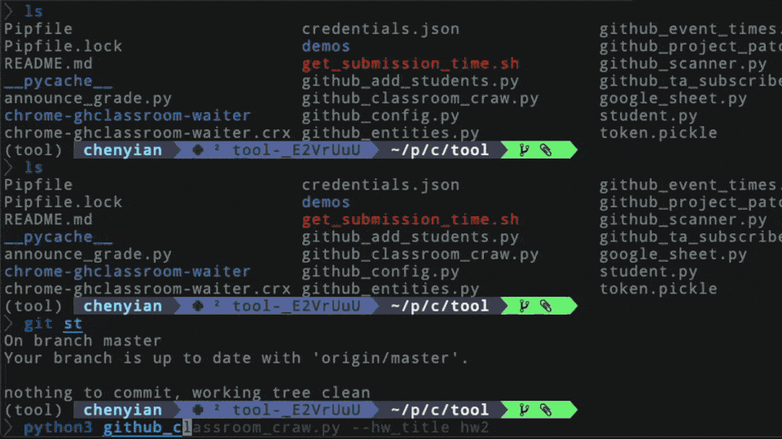
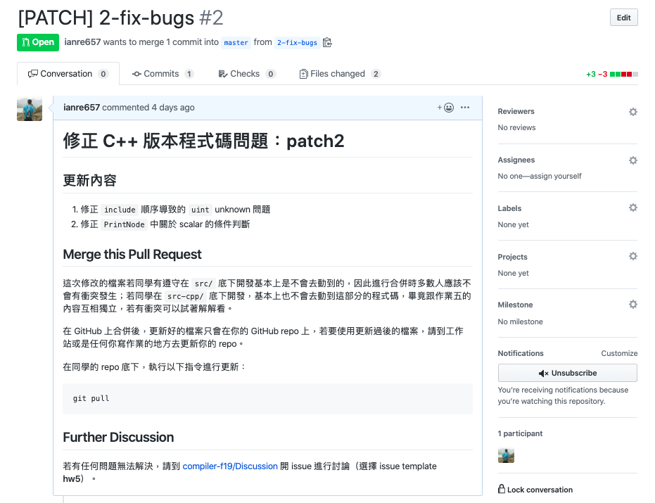
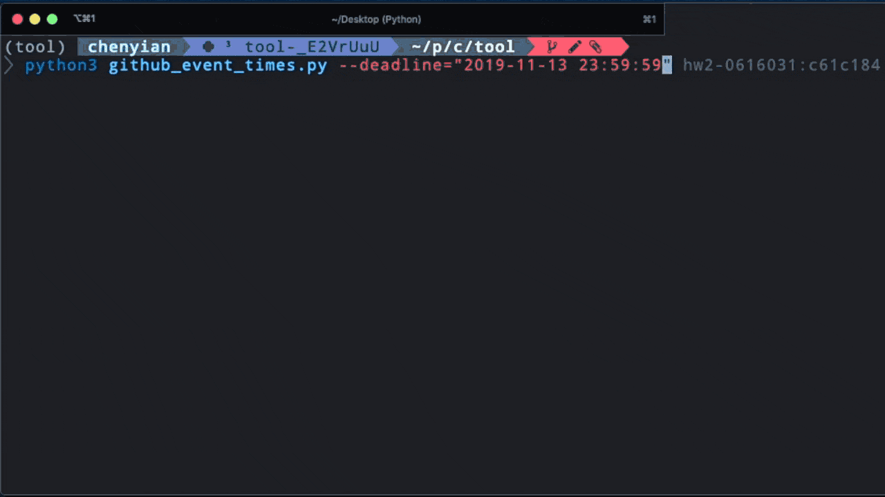
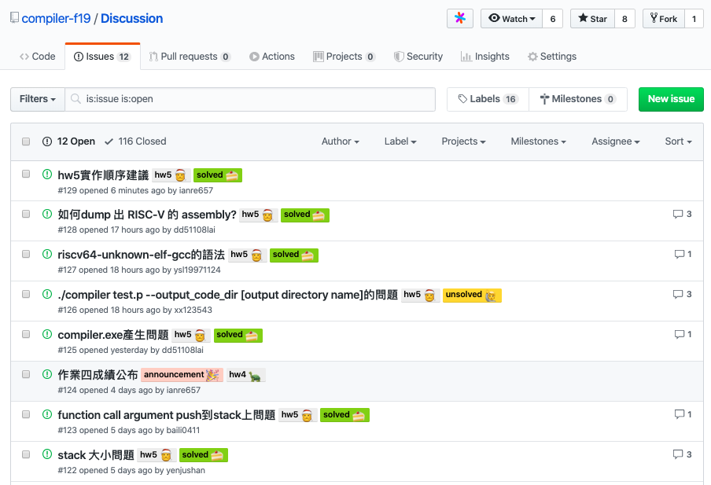
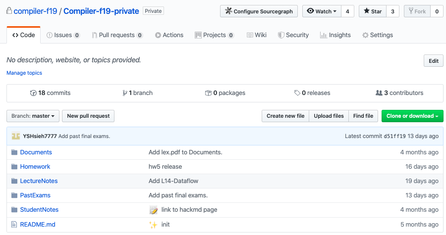
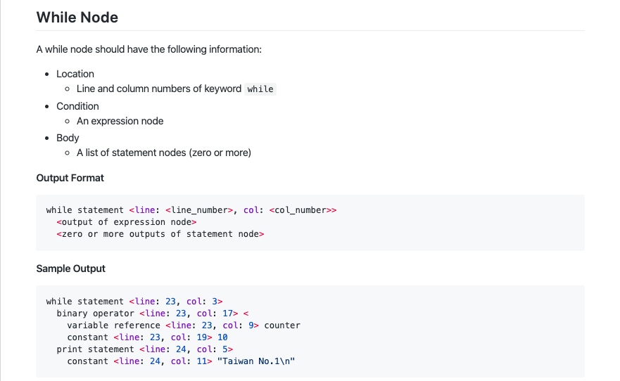
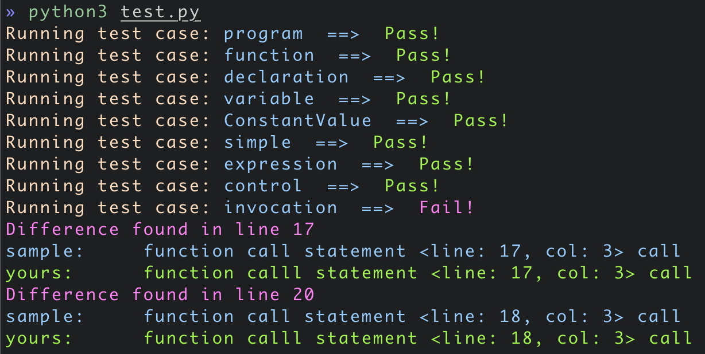

<!DOCTYPE html>
<html>

<head>
  <meta charset="utf-8" />
  <meta content="width=device-width, initial-scale=1" name="viewport" />
  <meta content="#ffffff" name="theme-color" />
  <meta content="#da532c" name="msapplication-TileColor" />

  
<link href='&#x2F;icons&#x2F;site.webmanifest' rel="manifest" />


<link href='&#x2F;icons&#x2F;favicon-16x16.png' rel="icon" sizes="16x16" type="image/png" />


<link href='&#x2F;icons&#x2F;favicon-32x32.png' rel="icon" sizes="32x32" type="image/png" />


<link href='&#x2F;icons&#x2F;apple-touch-icon.png' rel="apple-touch-icon" sizes="180x180" />

  

<link href='https:&#x2F;&#x2F;ianchen.tw&#x2F;main.css' rel="preload" as="style" />
<link href='https:&#x2F;&#x2F;ianchen.tw&#x2F;main.css' rel="stylesheet" />


  
  

  <title>
     IanChen | Github 編譯器課程改革 - 我在交大資工 
  </title>

  
  <script src="https://kit.fontawesome.com/ab28266223.js" crossorigin="anonymous"></script>

  
  
  
  <script async src="https://www.googletagmanager.com/gtag/js?id=UA-116173804-1"></script>
  <script type="text/javascript">
    window.dataLayer = window.dataLayer || [];
    function gtag() {
      dataLayer.push(arguments);
    }
    gtag("js", new Date());
    gtag("config", "UA-116173804-1");
  </script>


</head>

<body class="">
  <nav id="navbar" aria-label="section navigation" class="navbar" role="navigation">
<div class="container">
    <div class="navbar-brand">
    <a id="navbar-title" class="navbar-item has-text-weight-bold" href="/about">IanChen</a>
    <a aria-expanded="false" aria-label="menu" class="navbar-burger burger" data-target="navMenu" role="button">
        <span aria-hidden="true"></span>
        <span aria-hidden="true"></span>
        <span aria-hidden="true"></span>
    </a>
    </div>
    <div class="navbar-menu" id="navMenu">
        <div class="navbar-start">
            
                <a class="navbar-item" href='https:&#x2F;&#x2F;ianchen.tw&#x2F;about'>
                    About
                </a>
            
                <a class="navbar-item" href='https:&#x2F;&#x2F;ianchen.tw&#x2F;posts'>
                    Posts
                </a>
            
                <a class="navbar-item" href='https:&#x2F;&#x2F;ianchen.tw&#x2F;tags'>
                    Tags
                </a>
            
                <a class="navbar-item" href='https:&#x2F;&#x2F;ianchen.tw&#x2F;archives'>
                    Archives
                </a>
            
        </div>
        <div class="navbar-end has-text-centered">
            <a class="navbar-item" darkmode-switch-button id="dark-mode" title="Switch to dark theme">
            <span class="icon">
                <i class="fas fa-adjust"></i>
            </span>
            </a>
        </div>
    </div>
</div>
</nav>

  
  

  
<section class="section pb-0">
  <div class="container">
    <div class="columns">
      <div class="column is-6 is-offset-3">
        <article>
          <h1 class="title">Github 編譯器課程改革 - 我在交大資工</h1>
          <h2 class="subtitle"></h2>
          <div class="columns is-multiline is-gapless">
            <div class="column is-8">
              
  <p class="theme-color-dimmed">
    <a href="/about">
      
        
      
    </a>
    
      <a href="/about">
        <span class='author-name'>
          奕安
        </span>
      </a>
      published on
    
    <span class="icon">
      <i class="far fa-calendar-alt"></i>
    </span>
    <time datetime='2020-01-17'>January 17, 2020</time>
  </p>

            </div>
            <div class="column is-4 has-text-right-desktop">
              
  <p class="has-text-grey">
    <span class="icon">
      <i class="far fa-clock"></i>
    </span>
    26 min,
    <span class="icon">
      <i class="fas fa-pencil-alt"></i>
    </span>
    5133 words
  </p>

            </div>
            <div class="column is-4">
              
            </div>
            <div class="column is-8 has-text-right-desktop">
               
  <p>
    <span class="has-text-weight-normal">Tags:</span>
    
      <a class="link" href='https:&#x2F;&#x2F;ianchen.tw&#x2F;tags&#x2F;life&#x2F;'>
        <span class="icon is-small">
          <i class="fas fa-tag fa-xs"></i>
        </span>
        life
      </a>
    
      <a class="link" href='https:&#x2F;&#x2F;ianchen.tw&#x2F;tags&#x2F;jiao-da&#x2F;'>
        <span class="icon is-small">
          <i class="fas fa-tag fa-xs"></i>
        </span>
        交大
      </a>
    
      <a class="link" href='https:&#x2F;&#x2F;ianchen.tw&#x2F;tags&#x2F;dev&#x2F;'>
        <span class="icon is-small">
          <i class="fas fa-tag fa-xs"></i>
        </span>
        Dev
      </a>
    
  </p>
 
            </div>
          </div>
          <div class="content has-text-justified">
            <p>資工系大學四年，我最討厭的就是寫作業。</p>
<p>討厭寫了一個專案，設計出一個好架構之後助教卻說把所有程式碼放進同一個檔案。
</br>討厭那些不負責任的作業說明，總是什麼都沒寫卻要求學生做一堆東西。
</br>討厭總是把所有人成績公告出來，一點都不尊重學生的隱私權。
</br>討厭繳交作業的前一刻學校的 e3 系統在維修，不然就是期末考期間一次次的當機。
</br>討厭沒有美感的課程網站設計。</p>
<p>但我更討厭當個只會抱怨的廢物。
</br>所以我決定做個嘗試，把這些問題通通解決。</p>
<p></p>
<span id="continue-reading"></span>
<p>2019.6 - 2020.1</p>
<h2 id="xin-de">心得</h2>
<p>2019 年 6 月初我向老師提出了大學部編譯器課程未來作業改使用 Git 繳交的想法，目標是讓同學能夠脫離原始時代開發方式，開始使用版本控管，並且以寫專案的態度來完成作業，藉此踏入真正有用的程式開發階段。</p>
<p>恰巧同時我也知道益揚在修完大學部編譯器後也開始研究該如何修改作業樣貌，改善課程品質。在一邊改革一邊跑課程的情況之下，也勉強撐過第一學期，於是在學期結束前做個完整回顧。</p>
<p>這個學期的經驗感覺起來像小創業的感覺，主要是因為課程進度是隨著時間不斷推進，往往沒有充裕時間能依心中順序做想做的事情，也沒辦法把一切完善成心中的極致模樣。出於時間緊迫，我每星期都需要重新檢視並設定我的計畫，甚至需要因為時程做出一些妥協，比如說放棄撰寫某些教學文件，又或是除掉某些想做的功能。</p>
<p>過去的我可能會覺得妥協是件萬萬不可的壞事，但在這學期我卻常發現 -- 正因為面臨妥協，我才被逼著回頭省視目標事物的本質，做完思考後再對我的工作進行剪裁，把心思專注在最重要的體驗之上，或許就是因此才能讓我們的課程得以更進一步，變成更有用的東西。</p>
<p>在這學期的繁忙之下，我養成了個有趣習慣：每天用筆在紙上寫下我的代辦清單，即便我大部分的筆記也透過 ipad 跟 apple pencil 電子化，我仍舊認為用一張 A4 空白紙規劃每天行程是件無法取代的事情，在質感而言，紙本的粗糙感更勝於玻璃螢幕，除此之外，手寫字之於我更像是種每日儀式，帶來的安心感能取代一切。</p>
<p>最後，我認為在這學期中遇見的所有問題都是人的問題，一件事情該怎麼做從來就沒有個標準解法，以人的角度出發，才能真正做出一件有人想用的東西。</p>
<p>謝謝這學期 SSLab 其他碩一的小夥伴：<code>宇勝</code>，<code>益揚</code>，還有 <code>我自己</code>，謝謝逸平老師給我這個機會去嘗試做我想做的事情，也謝謝這學期的每位修課生。</p>
<p>雖然我們在課程上花的大部分心力其實學生都是看不見的，但我想一個有能力的人不能只是讓自己窮忙，而是要在有想法之下做出有意義之事。</p>
<p>附上今年修訂自己履歷表時硬寫上的一句話：</p>
<blockquote>
<p>I believe compassion is the most valuable trait in a man. By practicing this he could build things that truly motivate people.</p>
</blockquote>
<p>這學期的核心目標是提升交大資工編譯器課程的修課體驗，體驗有很多種，不過我認為最簡單的幾點就是一開始提到的：明確，具有教學意義的作業說明，尊重同學的隱私權，穩定可靠的系統，跟具有設計感的網站設計，還有學生跟助教間的高互動性。不管這學期做了些什麼，都是以此作為目標進行優化。</p>
<hr />
<p>以下大概紀錄了這學期做了些什麼東西</p>
<h2 id="ke-cheng-wang-zhan">課程網站</h2>
<p>六月初踏出的第一個嘗試是策劃新課程網站，有趣的是網站在真正做出來前都沒跟老師正式提到過。
最初的想法是網站不僅要好看，也要對這門課程提供足夠的資訊。</p>
<p>一個網站，有什麼困難的呢？</p>
<p>我也這麼覺得，不過我想要有個不用管理伺服器的網站，又同時能夠管理課程講義的存取權，好像就沒有這麼直覺了。最後我選擇了 github pages + hugo 來架站。</p>
<p>其實架設網站的過程並沒有寫起來這麼順利，因為只有我一人在開發，除了網站功能外我也必須同時撰寫網站內容，但因為一開始想在其中放入過多功能，讓網站拖到開學前都沒搞好，差點讓架站之路失敗，最後我決定暫時拋棄網站，全力整理跟撰寫內容，才好不容易在第一堂課前勉強上架。</p>
<p>實作的過程的確是踩了些雷，也告訴我不該急進。
最初直接在網路上找別人現成的範本開始改，搞了好幾天之後發現我不太會改他們的程式碼，於是才開始看官方教學重新學習如何寫一個網站主題。花了三四天集中刷完教學影片跟官方文件後，我開始大量載下不同的現有網站主題，一個一個閱讀他們的寫法，最後才東摸西採花了兩個星期寫出自己的網站。
只不過一當我的網站想支援不同螢幕尺寸(RWD) 時，卻又陷入了另外一個瓶頸：我沒有RWD經驗，僅存時間也不夠學。
時間壓力下我又回到網路上搜尋範本，但這次因為已經對 Hugo 有不少理解，一天多就做出成果了。</p>
<p></p>
<h2 id="shou-fa-zuo-ye">收發作業</h2>
<p>這是整個流程中最困難的一部分，難的原因是用 Git 收發作業在實際上有很多種方式，這花了幾個星期的時間去實驗跟分析每個我想到的方法，最後才給出現在的樣子。</p>
<p>這些方法的優劣是怎樣評估的？</p>
<p>所有的評斷標準都是回到初衷：&quot;我想給學生最好的修課體驗&quot;，當然最好也能同時解決前面提到的問題。</p>
<p>我希望從學生的角度來看，盡量讓學生知道最少的額外知識，不管是收發作業，又或是更新作業敘述，都只需要最少動作就可以完成。
以 Git 開發為例，我們讓同學一個人每次作業都開一個新的 Repository，所以沒事的話預設不用處理分支的問題，而 Repo 的初始化則是使用我們提供的範本。這樣帶來的後果是在一個80人的課程中，6 次作業就會帶來接近 500 個 repo。</p>
<p>不過我覺得這是相對可以接受的，所以我們的就會使用每學期新開一個組織的方式來進行作業。</p>
<p></p>
<p>我採用 Github Classroom 來進行收發作業，雖說 Github Classroom 功能並不完善，但它也幫我們做掉課程需求 80% 的功能，我們只需要自己寫剩下的 20% 就好。</p>
<p></p>
<p></p>
<h3 id="zuo-ye-gui-ge-shu-geng-xin-zuo-ye">作業規格書 &amp; 更新作業</h3>
<p>我們該如何讓同學拿到作業規格書？而且如何在發現作業敘述不明確時適時更新？</p>
<p>過往的情況通常是用 Latex 製作成一個 pdf 檔案釋出，當規格有異動時可能會是製作新版本的 pdf 或是在某些公開的平台來公布改動，希望學生可以自己理解，放入自己的作業中。但這樣的問題其實很大，因為不是每個人都會每天重複檢查有沒有最新版的規格，而就算知道有更動後要整合進自己的體系也會有點麻煩。</p>
<p>很簡單，我們把規格書寫成 Github Repository 中的 <code>README.md</code> 文件，當作業更新時我們就會跑 scrpit 到每一位同學的 repo 下開出新的 Pull Request，由於是使用 git 操作，同學可以直接透過 <code>git diff</code> 看出更動的程式碼或文件部分。</p>
<p>而為什麼更新是使用開 Pull Request 的方式而不是直接更新同學的 repo，是因為我想把更新規格書的“權力”交給學生，所以不會擾亂到他們的作業流程。</p>
<p></p>
<p>一個學生一個 repo，所以每次更新都需要發 80 個 Pull request ，而我們還需要維護這些 Pull request 中說明文件的範本，也需要維護哪些檔案是需要更新的，這就是細節中的細節了，細講的用處不大。</p>
<h3 id="shou-zuo-ye">收作業</h3>
<p>收作業又是另外一個難題了。</p>
<p>在使用 Git 繳交作業的情況之下，單純只是 clone 學生的 repository 並且翻 git history 來找到學生死線前的繳交的最後版本是沒有用的，因為 git 的提交時間是可以被任意竄改的。</p>
<p>所以我想到了三種方式，第一個種方式是使用 Github Webhook，主要想法是在每個學生的 git repository 中加上一個 callback，一但同學有 push 行為時就通知我們的伺服器，在收作業時就根據收集來的資料來知道同學的繳交版本跟時間。對此，我在一個月內自學了 node.js，並且使用了 express 去架設了這樣的伺服器。只不過服務寫出來後就被老師打槍了 — 為了交接跟管理方便，教授希望我們架的伺服器越少越好。</p>
<p>第二種方式是結合 CI/CD 工具 — 當學生的 repo 一有動靜，CI/CD工具就會自動執行預設的 script 並在系統中留下最後的執行時間，這樣的優點是除了紀錄繳交時間外還可以額外結合自動化批改。唯一問題是在現有較方便的 CI/CD 工具下我們的作業一定得採用 <strong>付費方案</strong>，顯然教授不會支援我們這筆經費(至少在他理解到這堂課會變得多棒之前)，而我們也不是哈佛的 CS50 課程，沒辦法像他們一樣直接得到這些廠商的特別贊助，免費拿到這些資源，所以我們要玩就要用窮人的方法來玩 -- 自架 CI/CD 服務，不過這個時間成本對我來說有點高，所以就暫時擱置。</p>
<p>第三種方式是用現有服務來拿到同學在死線瞬間時間的 git commit hash ，也是我們現在用的方式，因為 Github Classroom 支援作業繳交的功能，他們的伺服器會設定在死線到的那瞬間拿取所有人最新的 git commit 紀錄當作繳交版本。 但在我們的情況下要使用這種方式還需要撰寫一些額外的腳本，因為 Github Classroom 缺少公開 API ，而且也不支援遲交功能。針對拿資料的部分，我只好自己撰寫一支爬蟲來處理。針對 Github Classroom 不支援遲交作業的選項，我們想到的方式是做出兩種死線，我們系統上設定的死線是作業公告的死線結束一星期後，在系統死線到的時候再配合 Github 的公開 API 拿取同學最後一次 push 的伺服器時間，藉此判定同學的真正繳交時間。</p>
<p></p>
<h2 id="ping-tai-xuan-ze">平台選擇</h2>
<p>在第一個學期中選擇 Github 是因為有 Github Classroom 能夠輔助我們做事情，在時間壓力之下不太想重複造輪子。
Github 的第一個好處是能見度高，有較多第三方服務支援，其次是伺服器的吞吐量大，不像學校一樣會在期末考週或是午夜死線因流量過大而當機。
不過小問題是客製化程度好像略低，如果要考慮 CI/CD 整合的話我會比較考慮使用 Gitlab。
未來在整合的時候會考慮寫一個 Adaptor，然後底層可以自由接 github 或是 gitlab 來實作，讓課程能自由在不同平台之間選擇。</p>
<h2 id="tao-lun-qu-jia-she">討論區架設</h2>
<p>課程的討論區其實不難架設，我的方法是在組織之下開一個專門討論用的 repo ，請同學有問題就開 issue ，我們會透過不同的 tag 來表示問題的資料與狀況。</p>
<p></p>
<h2 id="si-you-zi-liao-nei-rong">私有資料內容</h2>
<p>在課程的內容管理部分，我就是開啟一個只有課程組織內的成員才有存取權限的 repo。如此一來我們的靜態網站就可以把身份認證的問題丟給 github 處理。</p>
<p></p>
<h2 id="zi-dong-hua-pi-gai">自動化批改</h2>
<p>今年最不一樣的事情是，我們在每一次作業都加入了自動化批改流程。</p>
<p>聽起來很簡單，但所謂的自動化批改就是使用 diff 來比對答案相不相同，只不過如果想要針對編譯器的輸出來進行比對，就代表編譯器的規格必須要定義的完全沒有歧異，再加上今年的課程改革幾乎把作業規格打掉重寫，只能說益揚跟宇勝兩人實在是厲害了，用兩個人的力量就做出過去課程助教定義不出來的細節，讓我不用在這方面多做操心，專心開發課程工具。</p>
<p></p>
<p></p>
<h2 id="jiao-ben-gong-ju-kai-fa">腳本工具開發</h2>
<p>我們的平台之所以會選擇，github classroom + github ，是因為他們的服務已經替我們做掉了 80% 的事情。接下來只要做額外 20% 的事情就好，而這些 script 就是剩下的 20%。
在思考我們的作業需求之後，我們參考 Github API 配合 Python 來自動化掉一些流程。
比如說:</p>
<ul>
<li>邀請學生進入 github organization</li>
<li>讓所有助教擁有學生作業 repo 的存取權</li>
<li>更新作業規格，釋出範例 code （簡稱打 patch）</li>
<li>擷取同學的作業繳交狀況 + 產生遲交報告</li>
<li>公布成績</li>
</ul>
<p>大部分的作業就是藉由 Github API v3 去實踐，我曾經考慮改使用 Github GraphQL API v4  來實踐，只不過開發當初在社群上發現有人反映 Github 的 GraphQL API 有些許問題，我就先改用這個了，或許未來能夠藉著重新整理程式碼的時候慢慢搬遷過去。</p>
<p>在這之中比較有趣的腳本我認為是公布成績。</p>
<p>考量到學生的隱私權，我把成績透過開 issue 到同學個別的作業 repo 之下來個別公布，每一篇 issue 會包含學生的總成績，以及像是一些自動化批改的輸出資訊，來讓同學知道自己哪些部分沒有做好。</p>
<p>為了方便管理資料，我們把所有學生的成績放在同一張 google sheet 下面，公布成績的腳本會透過google sheet API 來拿取必要資訊，但也跟前面說的一樣，一些非成績的資訊我們會放在一個助教共同管理的 github repo 之下，透過範本的方式來填入每一位同學的詳細資訊。</p>
<h2 id="xian-kuang">現況</h2>
<p>總之，第一個學期是跑過了，這學期常常有一邊搭火車一邊在前面舖鐵軌的感覺，不少夜晚跟週末都是在趕工下度過。
且在不少同學都能正確完成規格要求的情況下，大致上證明我們的規格書是可行的，只不過透過每次作業同學的疑問我們都可以再找出一些可以細修的方向。</p>
<p>主要的問題或許是我們做出的難度過高，即便大部分作業立意良善，努力透過教學文件來降低難度，卻因為過多的實踐細節以及一開始的作業留白讓同學不知道該如何下手。常常可以看見同學分享從理解到寫完大概是 30+ 小時的過程。</p>
<h2 id="wei-lai-gai-shan-fang-xiang">未來改善方向</h2>
<p>學期結束之後，我想我們會去重看每次同學中給出的回饋來決定未來修改方向。不僅是規格細節，整個學期每份作業的難度也都要進行修改。</p>
<p>或許有些同學會認為作業過難，但其實我有幾點比較有趣的認知：我認為高作業難度是可以而且該被鼓勵的。</p>
<p>為什麼呢？</p>
<p>這就是在美國的修課感想了。今年年初到美國之後才發現 UIUC 並不推薦一學期修超過 3 門 CS 的必修課程，原因是每個必修的作業量都很重，這跟我在交大的經驗完全不同，過去身旁總充斥著一學期五主科，七主科的同學們，可以直接說是因為課程負擔過低，不少課程都是左摸又摸，作業簡簡單單就能完成，一學期之後什麼都沒學到。大部分的課程都是如此，也讓我四年下來漸漸從戲稱交大為”學店“轉成為開始如此認同。</p>
<p>我主張，<strong>作業應該要難</strong>，但不能只是一股腦的難，要難的有門路。
難不該是問題，而是要讓肯花心思，沒底子的同學能靠自己的力量爬上來。
課程應該盡力包含所有作業會使用到的東西，該給的教學要給，改放的提示也要放。</p>
<p>「難的合理」是這學期除了修課體驗之外的另一大目標，但卻也是因為這個目標的存在才造成不少問題。
30+ 小時的寫作業時間，是這門課的修課生跟授課者都該有的共識，但在交大修課的學生基於過去經驗沒辦法領會到這件事情，不少人在修這門課的同時又嘗試了更多重課，搞得自己生不如死。
未來在調整難度的同時，我也希望能夠讓同學具有這樣的共識才能進來修課。</p>
<p>在未來作業中，我會嘗試把自動化批改跟 CI/CD 工具結合，以及給出作業環境所需的 docker image。讓同學能夠在本地端就能取用到相同的資料。</p>
<p>最後大概就是重構我寫的腳本，把他們整理成一個工具集並撰寫足夠的文件，當整理完畢後可能會開源出來，為社群貢獻一分心力吧。</p>
<h2 id="zong-jie-qi-wang">總結 &amp; 期望</h2>
<p>回想高中忙社團的時候，我總是付出了一堆時間跟努力，旁人卻常常看不見自己的付出，度過那段歲月後我學到的是除了自己要努力之外，也要努力在重要、有影響力的方向上。</p>
<p>這門課一開始的想法很簡單，只不過實驗上可行與能搬上檯面兩者真的需要不小的落差需要去彌補。做工程，或是做產品的人，都需要這種打磨的心態。</p>
<p>跟羿伶聊天的時候曾經提過，我認為推動社會進步的力量不是只有利益關係，對於好與正確的堅持也是重要之事。
希望在我的影響之下，我所待過的交大資工往更專業，有理想的方向移動一些。</p>
<h2 id="yi-xie-lian-jie">一些連結</h2>
<ul>
<li><a href="https://compiler-f19.github.io/">課程網站 - https://compiler-f19.github.io/</a></li>
<li><a href="https://github.com/compiler-f19/Discussion">課程討論區 - https://github.com/compiler-f19/Discussion</a></li>
</ul>

          </div>
        </article>
      </div>
      
    </div>
  </div>
</section>


   
<section class="section">
  <div class="container">
    <div class="columns is-centered">
      <div class="column is-8">
        <nav class="level">
          
          <div class="level-item has-text-centered">
            <a
              class="button is-outlined"
              href="https:&#x2F;&#x2F;ianchen.tw&#x2F;posts&#x2F;develop-with-docker&#x2F;"
            >
              <span class="icon mr-2">
                <i class="fas fa-arrow-circle-left"></i>
              </span>
              使用 Docker 設置開發環境
            </a>
          </div>
           
          <div class="level-item has-text-centered">
            <a
              class="button is-outlined"
              href="https:&#x2F;&#x2F;ianchen.tw&#x2F;posts&#x2F;2019-difference-between-c-and-python&#x2F;"
            >
              C 跟 Python 本質上的差異<span class="icon ml-2">
                <i class="fas fa-arrow-circle-right"></i>
              </span>
            </a>
          </div>
            
        </nav>
      </div>
    </div>
  </div>
</section>
 

    

  <footer class="py-4">
  <p class="has-text-centered">© 2018 Ian Chen</p>
</footer>

  <script src="https:&#x2F;&#x2F;ianchen.tw&#x2F;js&#x2F;site.js"></script>
    

</body>

</html>